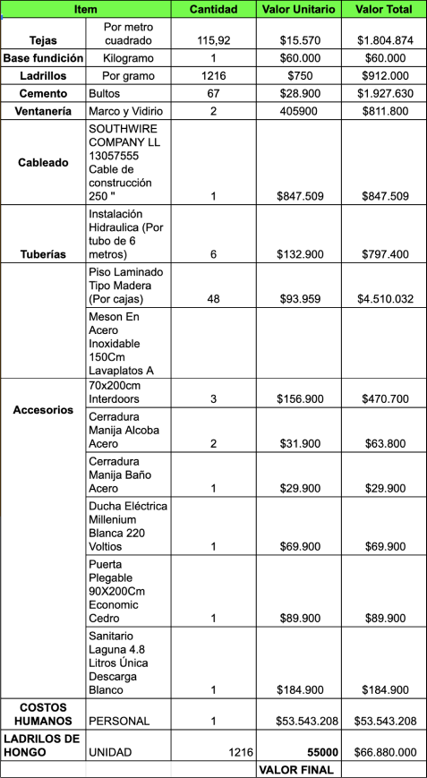

Home
Para poder llegar a sacar cualquier tipo de
conclusión es necesario tener los costos
claros de todos los materiales que se
necesitarán para realizar el proyecto de
manera individual es decir costo unitario de
cada material y costo total del material
teniendo en cuenta las cantidades de material
necesarias para satisfacer las
especificaciones de la casa, para luego pasar
a sacar el total final del costo completo del
proyecto gracias a cada uno de esos cálculos
de costos realizados de manera individual.
ESTUDIO DE COSTOS
La economía de la persona o familia es importante, un
estudio de costos detallado es necesario
El economista
Santiago Hernandez Serna
“El tener un estudio de costos nos permite tener
un aproximado del valor total de construcción de
una casa para que nuestros clientes tenga una
base clara de su valor y el por qué”
-Santiago Hernandez
Un presupuesto
comodo
Hemos hecho simulacros con viviendas que poseen las características para
que una persona o una familia viva en condiciones de vivienda digna, y lo
hemos logrado, nos hemos mantenido por debajo del máximo costo que
puede tener una vivienda VIS.
Un pequeño ejemplo

Por medio de este pequeño
simulacro se puede evidenciar
que la contrucción de la
vivienda es viable y se puede
implementar por debajo de los
costos de una vivienda de
interés social. Se tiene que tener
en cuenta que al ser una
organización sin fines de lucro,
tenemos la posibilidad de
rebajar de una gran manera los
costos. Nuestro objetivo no es
el dinero sino el apoyo a la
comunidad